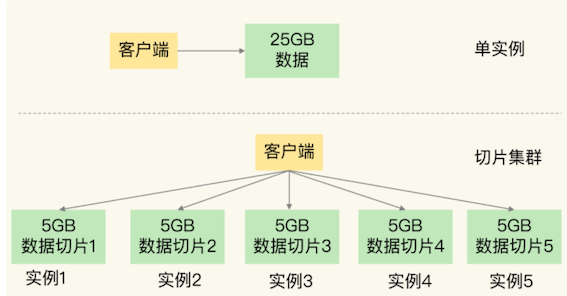
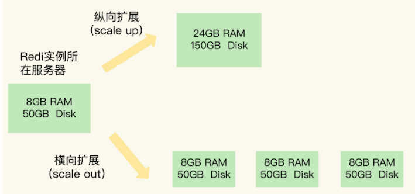
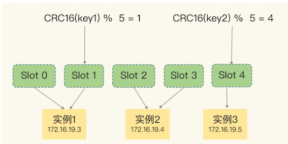
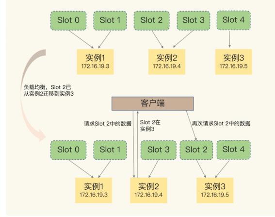
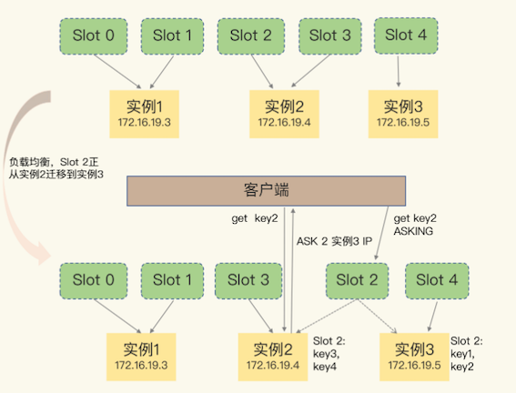

第九节 切片集群：数据增多了，是该加内存还是加实例
要用 Redis 保存 5000 万个键值对，每个键值对大约是 512B，为了能快速部署并对外提供服务，我们采用云主机来运行 Redis 实例，那么，该如何选择云主机的内存容量呢？
这些键值对所占的内存空间大约是 25GB（5000万 * 512B）
选择一台 32GB 内存的云主机来部署 Redis。因为 32GB 的内存能保存所有数据，而且还留有 7GB，可以保证系统的正常运行。同时，我还采用 RDB 对数据做持久化，以确保 Redis 实例故障后，还能从 RDB 恢复数据。
1、大内存 Redis 响应慢的问题
在使用的过程中，我发现，Redis 的响应有时会非常慢。后来，我们使用 INFO 命令查看 Redis 的 latest_fork_usec 指标值（表示最近一次 fork 的耗时），结果显示这个指标值特别高，快到秒级别了。
使用命令
info stats查看， 里面有一个latest_fork_usec条目
这跟 Redis 的持久化机制有关系。
在使用 RDB 进行持久化时，Redis 会 fork 子进程来完成，fork 操作的用时和 Redis 的数据量是正相关的，而 fork 在执行时会阻塞主线程。数据量越大，fork 操作造成的主线程阻塞的时间越长。
所以，在使用 RDB 对 25GB 的数据进行持久化时，数据量较大，后台运行的子进程在 fork 创建时阻塞了主线程，于是就导致 Redis 响应变慢了。
Redis 的切片集群。虽然组建切片集群比较麻烦，但是它可以保存大量数据，而且对 Redis 主线程的阻塞影响较小。
2、Redis 切片集群
哨兵集群（非主从，单纯集群）
主从方式（主要为了高可用 和 分担读的压力，每个节点数据是一致的）
切片集群
( 降低节点的压力和单节点内存大小，每个节点的数据是不一致的，分布式的，共同承担整个redis集群查询操作；
切片集群有slot哈希槽的概念，类似于数据分区，哈希槽有16384个，不同的哈希槽绑定不同的redis实例；
新来请求的key会在客户端侧通过CRC16计算再对16384取模得到哈希槽编号，查本地缓存找到对应的实例地址和端口进行下一步查询；
如果Redis实例扩容等操作引起哈希槽分配变换，实例通过返回重定向MOVED 或者 ASK（当前还未迁移结束），让客户端去请求槽所在的新实例）
切片集群，也叫分片集群，就是指启动多个 Redis 实例组成一个集群，然后按照一定的规则，把收到的数据划分成多份，每一份用一个实例来保存
25GB 的数据平均分成 5 份（当然，也可以不做均分），使用 5 个实例来保存，每个实例只需要保存 5GB 数据。如下图所示：

在切片集群中，实例在为 5GB 数据生成 RDB 时，数据量就小了很多，fork 子进程一般不会给主线程带来较长时间的阻塞。
采用多个实例保存数据切片后，我们既能保存 25GB 数据，又避免了 fork 子进程阻塞主线程而导致的响应突然变慢。
3、如何保存更多数据？
为了保存大量数据，我们使用了大内存云主机和切片集群两种方法。
实际上，这两种方法分别对应着 Redis 应对数据量增多的两种方案：纵向扩展（scale up）和横向扩展（scale out）。
- 纵向扩展：升级单个 Redis 实例的资源配置，包括增加内存容量、增加磁盘容量、使用更高配置的 CPU。就像下图中，原来的实例内存是 8GB，硬盘是 50GB，纵向扩展后，内存增加到 24GB，磁盘增加到 150GB。
- 横向扩展：横向增加当前 Redis 实例的个数，就像下图中，原来使用 1 个 8GB 内存、50GB 磁盘的实例，现在使用三个相同配置的实例。

3-1 纵向扩展
纵向扩展的好处是，实施起来简单、直接
两个潜在的问题
第一个问题是，当使用 RDB 对数据进行持久化时，如果数据量增加，需要的内存也会增加，主线程 fork 子进程时就可能会阻塞（比如刚刚的例子中的情况）。不过，如果你不要求持久化保存 Redis 数据，那么，纵向扩展会是一个不错的选择。
第二个问题：纵向扩展会受到硬件和成本的限制。这很容易理解，毕竟，把内存从 32GB 扩展到 64GB 还算容易，但是，要想扩充到 1TB，就会面临硬件容量和成本上的限制了。
3-2 横向扩展
横向扩展是一个扩展性更好的方案
要想保存更多的数据，采用这种方案的话，只用增加 Redis 的实例个数就行了，不用担心单个实例的硬件和成本限制。在面向百万、千万级别的用户规模时，横向扩展的 Redis 切片集群会是一个非常好的选择。
两个问题
- 数据切片后，在多个实例之间如何分布？
- 客户端怎么确定想要访问的数据在哪个实例上？
4、数据切片和实例的对应分布关系
Redis 3.0 开始，官方提供了一个名为 Redis Cluster 的方案，用于实现切片集群。Redis Cluster 方案中就规定了数据和实例的对应规则。
- Redis Cluster 方案采用哈希槽（Hash Slot，接下来我会直接称之为 Slot），来处理数据和实例之间的映射关系。
- 在 Redis Cluster 方案中，一个切片集群共有 16384 个哈希槽，这些哈希槽类似于数据分区，每个键值对都会根据它的 key，被映射到一个哈希槽中。
4-1 映射过程
- 首先根据键值对的 key，按照CRC16 算法计算一个 16 bit 的值；
- 然后，再用这个 16bit 值对 16384 取模，得到 0~16383 范围内的模数，每个模数代表一个相应编号的哈希槽。
哈希槽又是如何被映射到具体的 Redis 实例上
我们在部署 Redis Cluster 方案时，可以使用 cluster create 命令创建集群，此时，Redis 会自动把这些槽平均分布在集群实例上。
例如，如果集群中有 N 个实例，那么，每个实例上的槽个数为 16384/N 个。
当然， 我们也可以使用 cluster meet 命令手动建立实例间的连接，形成集群，再使用 cluster addslots 命令，指定每个实例上的哈希槽个数。
举个例子，假设集群中不同 Redis 实例的内存大小配置不一，如果把哈希槽均分在各个实例上，在保存相同数量的键值对时，和内存大的实例相比，内存小的实例就会有更大的容量压力
根据不同实例的资源配置情况，使用 cluster addslots 命令手动分配哈希槽。

切片集群一共有 3 个实例，同时假设有 5 个哈希槽，我们首先可以通过下面的命令手动分配哈希槽：
实例 1 保存哈希槽 0 和 1，实例 2 保存哈希槽 2 和 3，实例 3 保存哈希槽 4。
redis-cli -h 172.16.19.3 –p 6379 cluster addslots 0,1
redis-cli -h 172.16.19.4 –p 6379 cluster addslots 2,3
redis-cli -h 172.16.19.5 –p 6379 cluster addslots 4
在集群运行的过程中，key1 和 key2 计算完 CRC16 值后，对哈希槽总个数 5 取模，再根据各自的模数结果，就可以被映射到对应的实例 1 和实例 3 上了。
在手动分配哈希槽时，需要把 16384 个槽都分配完，否则 Redis 集群无法正常工作。
5、客户端如何定位数据？
在定位键值对数据时，它所处的哈希槽是可以通过计算得到的，这个计算可以在客户端发送请求时来执行
客户端和集群实例建立连接后，实例就会把哈希槽的分配信息发给客户端。
但是，在集群刚刚创建的时候，每个实例只知道自己被分配了哪些哈希槽，是不知道其他实例拥有的哈希槽信息的。
5-1 客户端获得所有的哈希槽信息
那么，客户端为什么可以在访问任何一个实例时，都能获得所有的哈希槽信息呢？
这是因为，Redis 实例会把自己的哈希槽信息发给和它相连接的其它实例，来完成哈希槽分配信息的扩散。当实例之间相互连接后，每个实例就有所有哈希槽的映射关系了。
客户端收到哈希槽信息后，会把哈希槽信息缓存在本地。当客户端请求键值对时，会先计算键所对应的哈希槽，然后就可以给相应的实例发送请求了。
在集群中，实例和哈希槽的对应关系并不是一成不变的，最常见的变化有两个
- 在集群中，实例有新增或删除，Redis 需要重新分配哈希槽；
- 为了负载均衡，Redis 需要把哈希槽在所有实例上重新分布一遍。
5-2 客户端获得最新的哈希槽分配信息(重定向机制)
客户端是无法主动感知这些变化的。这就会导致，它缓存的分配信息和最新的分配信息就不一致了，
Redis Cluster 方案提供了一种重定向机制，所谓的“重定向”，就是指，客户端给一个实例发送数据读写操作时，这个实例上并没有相应的数据，客户端要再给一个新实例发送操作命令。
那客户端又是怎么知道重定向时的新实例的访问地址呢？
当客户端把一个键值对的操作请求发给一个实例时，如果这个实例上并没有这个键值对映射的哈希槽，那么，这个实例就会给客户端返回下面的 MOVED 命令响应结果，这个结果中就包含了新实例的访问地址。
GET hello:key
(error) MOVED 13320 172.16.19.5:6379
其中，MOVED 命令表示，客户端请求的键值对所在的哈希槽 13320，实际是在 172.16.19.5 这个实例上。 *
通过返回的 MOVED 命令，就相当于把哈希槽所在的新实例的信息告诉给客户端了。这样一来，客户端就可以直接和 172.16.19.5 连接，并发送操作请求了。
5-3 MOVED 重定向命令的使用方法

- 由于负载均衡，Slot 2 中的数据已经从实例 2 迁移到了实例 3
- 但是，客户端缓存仍然记录着“Slot 2 在实例 2”的信息，所以会给实例 2 发送命令。
- 实例 2 给客户端返回一条
MOVED命令，把Slot 2的最新位置（也就是在实例 3 上），返回给客户端， * 客户端就会再次向实例 3 发送请求，同时还会更新本地缓存，把 Slot 2 与实例的对应关系更新过来。
在上图中，当客户端给实例 2 发送命令时，Slot 2 中的数据已经全部迁移到了实例 3。
5-3 ASK 命令解决部分数据前移的问题
在实际应用时，如果 Slot 2 中的数据比较多，就可能会出现一种情况：客户端向实例 2 发送请求，但此时，Slot 2 中的数据只有一部分迁移到了实例 3，还有部分数据没有迁移。在这种迁移部分完成的情况下，客户端就会收到一条 ASK 报错信息，
GET hello:key
(error) ASK 13320 172.16.19.5:6379
这个结果中的 ASK 命令就表示，客户端请求的键值对所在的哈希槽 13320，在 172.16.19.5 这个实例上，但是这个哈希槽正在迁移。
此时，客户端需要先给 172.16.19.5 这个实例发送一个 ASKING 命令。
- 这个命令的意思是，让这个实例允许执行客户端接下来发送的命令。
- 然后，客户端再向这个实例发送 GET 命令，以读取数据

如图，Slot 2 正在从实例 2 往实例 3 迁移，key1 和 key2 已经迁移过去，key3 和 key4 还在实例 2。客户端向实例 2 请求 key2 后，就会收到实例 2 返回的 ASK 命令。
ASK 命令表示两层含义
- 第一，表明 Slot 数据还在迁移中；
- 第二，ASK 命令把客户端所请求数据的最新实例地址返回给客户端，此时，客户端需要给实例 3 发送 ASKING 命令，然后再发送操作命令。
和 MOVED 命令不同，ASK 命令并不会更新客户端缓存的哈希槽分配信息。
如果客户端再次请求 Slot 2 中的数据，它还是会给实例 2 发送请求。这也就是说，ASK 命令的作用只是让客户端能给新实例发送一次请求，而不像 MOVED 命令那样，会更改本地缓存，让后续所有命令都发往新实例。
6、本节小节
切片集群在保存大量数据方面的优势，以及基于哈希槽的数据分布机制和客户端定位键值对的方法。
- 在应对数据量扩容时，虽然增加内存这种纵向扩展的方法简单直接，但是会造成数据库的内存过大，导致性能变慢。
- Redis 切片集群提供了横向扩展的模式，也就是使用多个实例，并给每个实例配置一定数量的哈希槽，数据可以通过键的哈希值映射到哈希槽，再通过哈希槽分散保存到不同的实例上。
- 集群的实例增减，或者是为了实现负载均衡而进行的数据重新分布，会导致哈希槽和实例的映射关系发生变化，客户端发送请求时，会收到命令执行报错信息。
6-1 本节亮点
- 这一课我更加清晰的明白了之前别人聊Redis扩容中的纵向扩容和横向扩容的真实含义和区别
- 数据分片和实例的对应关系建立：按照CRC16算法计算一个key的16bit的值，在将这值对16384取模
- 一个切片集群的槽位是固定的16384个，可手动分配每个实例的槽位，但必须将槽位全部分完
- 客户端如何确定要访问那个实例获取数据：
- 从任意个实例获取并缓存在自己本地，
- 重定向机制
- 重定向机制：客户端访问的实例没有数据，被访问实例响应move命令，告诉客户端指向新的实例地址
- ASK命令：1，表明数据正在迁移 2，告知客户端数据所在的实例
- ASK命令和MOVE命令的区别：
- move命令是在数据迁移完毕后被响应，客户端会更新本地缓存。
- ASK命令是在数据迁移中被响应，不会让客户端更新缓存
6-2 本节一问
Redis Cluster 方案通过哈希槽的方式把键值对分配到不同的实例上，这个过程需要对键值对的 key 做 CRC 计算，然后再和哈希槽做映射，这样做有什么好处吗？如果用一个表直接把键值对和实例的对应关系记录下来（例如键值对 1 在实例 2 上，键值对 2 在实例 1 上），这样就不用计算 key 和哈希槽的对应关系了，只用查表就行了，Redis 为什么不这么做呢？
如果使用表记录键值对和实例的对应关系，一旦键值对和实例的对应关系发生了变化（例如实例有增减或者数据重新分布），就要修改表。如果是单线程操作表，那么所有操作都要串行执行，性能慢；如果是多线程操作表，就涉及到加锁开销。此外，如果数据量非常大，使用表记录键值对和实例的对应关系，需要的额外存储空间也会增加。
基于哈希槽计算时，虽然也要记录哈希槽和实例的对应关系，但是哈希槽的个数要比键值对的个数少很多，无论是修改哈希槽和实例的对应关系，还是使用额外空间存储哈希槽和实例的对应关系，都比直接记录键值对和实例的关系的开销小得多。